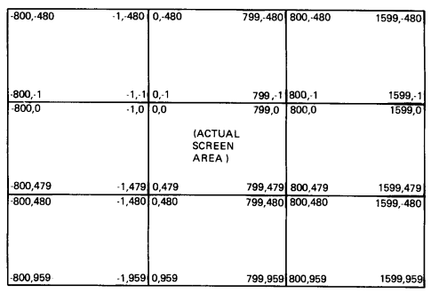
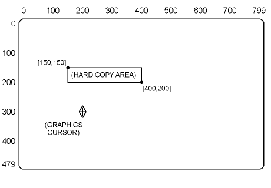
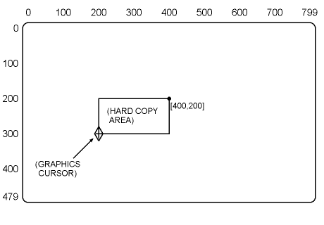
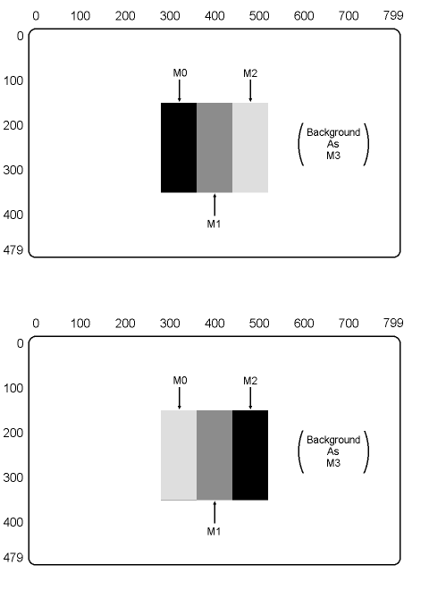

| Chapter 1 | Contents | Chapter 3 |
Screen control commands let you set parameters and attributes for the complete screen, or perform actions affecting the complete screen. There are 10 options to the screen control command.
The VT300 uses an [X,Y] screen coordinate system, described in Chapter 1. This system has default values of [0,0] for the upper-left corner and [799,479] for the lower-right corner. You should use these default values for most ReGIS applications.
You use the following format for a screen command using the display addressing option.
S(A[X1,Y1][X2,Y2])
where
S indicates a screen command.
A indicates the display addressing option.
[X1,Y1] is the coordinate for the upper-left corner.
[X2,Y2] is the coordinate for the lower-right corner.
You must include values for the upper-left and lower-right positions, or ReGIS ignores the command. When you change the default values, the terminal must perform an additional scaling step for each coordinate. This extra step can slow down performance.
NOTE: Pixel vector (PV) values depend on the display-addressing coordinates and the PV multiplier. However, PV directions are independent of addressing orientation. For example, 0 is always to the right.
You can write ReGIS code for devices that have a different address range than the VT300. The display addressing option lets you run ReGIS code written for another device on the VT300, without converting all the coordinates. The terminal takes care of scaling the coordinate system.
NOTE: Applications should use the display addressing option to make ReGIS images portable between devices that use different address ranges. The address range you define should match the default address range of the device you are coding for. This operation ensures that the device interprets all ReGIS commands consistently.
You can use exponential numbers as well as decimal numbers in your address definition. In any case, make sure the aspect ratio of the screen area you define is as close as possible to the default ratio of [0,0] by [799,479]. If not, the terminal clips the screen area to a display area that is close to the aspect ratio you specified.
The VT300 maintains the correct aspect ratio when displaying a picture created for another device. Squares are always square, and angles are always correct. For example, suppose you want to display a picture created for a VT125 terminal. This picture uses the display addressing for a VT125. The VT300 maps the default screen addressing of the VT125 into the leftmost 768 pixel columns of the VT300.
Figure 2-1 shows the effective address range when you use the default values of [0,0] and [799,479].
|  |
You can use negative addresses, but you cannot address them directly. There is no valid way to specify an absolute negative address. However, you can specify a relative value that produces a negative address. The negative address should not exceed the address range. If it does exceed the address range, then the terminal wraps the line.
If you need to invert the current addressing range, you can use any values for the left, right, top, and bottom margins. If the right margin value is less than the left margin value, then the X-coordinate increases to the left instead of to the right (as it would in the default coordinate system). If the bottom margin value is less than the top margin value, then the Y-coordinate increases upward instead of downward.
This argument lets you offset screen data within the display medium (the bitmap), without changing the coordinate system. Only the data is offset, not the coordinate system. The image moves relative to the screen origin.
There are two forms of the scroll argument. One form uses coordinate values for movement, the other form uses pixel vector (PV) values. The position you specify becomes the new upper-left corner of the screen, whether you use coordinates or PV values.
Any data scrolled out of the boundaries of the screen is lost. You cannot recover that data by reversing the scrolling.
| Using Coordinate Values | Using PV Values |
|---|---|
| S[X,Y] | S<PV value> |
where
[X,Y] is a coordinate value defining movement. You can use relative coordinates such as [+X,+Y], [-X,-Y], [+X], [-X], [,+Y], or [,-Y]; absolute coordinates such as [X], [,Y], or [X,Y]; or absolute/relative coordinates such as [+X,Y], [-X,Y], [X,+Y], or [X,-Y].
<PV values> are one or more pixel vector (PV) values defining movement, at the currently selected PV multiplication value.
When you use PV values, the scroll argument uses the currently selected PV multiplication factor. You can select a different factor by using a temporary write control option. The terminal only uses this temporary value until you use a new command key letter or another temporary write control option.
You use the following format to select a temporary PV multiplication factor.
S(W(M<multiplication factor>))<PV value>
where
W identifies a temporary write control option.
M identifies a PV multiplication suboption.
<multiplication factor> is a numeric value.
<PV values> are one or more PV values that will use the multiplication factor for movement.
This option lets you print a hard copy of the screen image. You can select what part of the screen to print and what starting offset to use for the printer.
There are three ways to select what part of a screen to print: with no position, one position, or two positions.
| No Position | One Position | Two Positions |
|---|---|---|
| S(H) | S(H[X,Y]) | S(H[X1,Y1][X2,Y2]) |
where
H identifies a hard copy control option. If you do not specify a coordinate position with this option, you select the complete screen for printing.
[X,Y] is one corner of the area to print. The terminal uses that position and the current cursor position to define the opposite corners of a rectangular area for printing.
[X1,Y1][X2,Y2] are two opposing corners of the area to print.
Figure 2-2 shows an example of the two-position option, and Figure 2-3 shows an example of the one-position option.
|
 | ||
| NOTE: Dots and lines would not appear in actual display. |
|
 | ||
| NOTE: Dots and lines would not appear in actual display. |
You can use absolute or relative values for coordinates. If you use relative values, then the positions are relative to the cursor position, not to any other position specified.
You can send the selected area of the screen to the printer or to the host. This action is under the control of printing control functions. See Chapter 16 for the graphics printing functions. You can print a compressed or expanded format by using the Graphics Print feature in the Graphics Set-Up screen.
You can specify a printing offset with the P suboption to the H option. The P suboption defines the starting offset for a graphic image. This is a relative offset between the current position of the printhead and the position where the upper-left corner of the graphic image will print.
You can only use the P suboption to change the default value. The new value remains in effect until you use another P suboption. You use the following format for the printing offset suboption.
S(H(P[X,Y]))
where
H identifies a hard copy control option.
P identifies a printing offset suboption.
[X,Y] is a relative position offset. The default value is [50,0].
You can also define the print area and specify the printing offset in the same command, as follows.
S(H(P[X,Y])[X1,Y1][X2,Y2])
where
[X1,Y1][X2,Y2] are two opposing corners of the area to print.
The P suboption prints the complete screen at the defined offset.
The printing offset is independent of screen addressing. The offset occurs at the printer. The actual distance of the offset depends on the size of the pixels used by the printer.
This option lets you change the current output map for the terminal. Output mapping lets you easily change the color or shading of an image. The format of this command depends on whether you are using a monochrome or color display.
The VT330 and VT340 use different forms of output mapping. The VT340 uses a color monitor and a 4-plane bitmap. The VT330 uses a monochrome monitor and a 2-plane bitmap. The next two sections describe the differences between the VT330 and VT340. Then the following sections describe the command formats for monochrome and color displays.
The VT330 has four output map locations in RAM. Each location stores a monochrome shade value. The output mapping option lets you change those values. Each location has a default value.
Table 2-1 shows the default monochrome map for the VT330. The table lists the default HLS (hue, lightness, and saturation) and RGB (red, green, and blue) values for each shade. The HLS and RGB color coordinate systems are described later in this chapter.
| Map Location | Default Shade | HLS Values | RGB Values | ||||
|---|---|---|---|---|---|---|---|
| H | L | S | R | G | B | ||
| 0 | Black | 0 | 0 | 0 | 0 | 0 | 0 |
| 1 | Dark gray | 120 | 50 | 100 | 100 | 0 | 0 |
| 2 | Light gray | 240 | 50 | 100 | 0 | 100 | 0 |
| 3 | White | 180 | 100 | 100 | 100 | 100 | 0 |
The 2-plane bitmap for the VT330 provides a 2-bit code for each pixel. The code selects one of the four output map locations. This means each pixel has four possible intensity values. You can change the intensity value of the pixel by changing its 2-bit code.
You can draw an image, then change its appearance by changing the associated output map location. You do not have to rewrite each pixel in order to address a different output map position. That is, you do not have to redraw an image to change its color.
Figure 2-4 provides an example of the output mapping process. The top half of the figure shows default values. In the bottom half, the value of 0 has been changed to light gray, and the value of 2 to dark gray.
|  |
The VT340 has 16 output map locations in RAM. Each location stores a monochrome shade value and a color value. The output mapping option lets you change the values stored in these locations. Each location has default monochrome and color values.
When an application selects the monochrome map: the terminal sets the 16 entries of the color map to the default monochrome gray level. Therefore, the original colors are lost when changing from the color map to the monochrome map.
If you change the color value (green, red, blue) using the Color Set-Up screen or a ReGIS command, the VT340 sets the gray scale by using the formula (2G + R)/3.
When an application selects the color map: the terminal sets the 16 entries of the color map to the default (color) color map.
Table 2-2 shows the default monochrome shade map for the VT340. Table 2-3 shows the default color map for the VT340. Each table lists the default HLS (hue, lightness, and saturation) and RGB (red, green, and blue) values for each shade/color. The HLS and RGB color coordinate systems are described later in this chapter.
The 4-plane bitmap for the VT340 provides a 4-bit code for each pixel. This means each pixel has 16 possible values. Each value corresponds to a specific output map location. You can change the intensity value or color of a pixel by changing its 4-bit code. The next two sections describe how to change monochrome and color values.
| Map Location | Default Shade | HLS Values | RGB Values | ||||
|---|---|---|---|---|---|---|---|
| H | L | S | R | G | B | ||
| 0 | Black | 0 | 0 | 0 | 0 | 0 | 0 |
| 1 | Gray-2 | 0 | 13 | 0 | 13 | 13 | 13 |
| 2 | Gray-4 | 0 | 26 | 0 | 26 | 26 | 26 |
| 3 | Gray-6 | 0 | 40 | 0 | 40 | 40 | 40 |
| 4 | Gray-1 | 0 | 6 | 0 | 6 | 6 | 6 |
| 5 | Gray-3 | 0 | 20 | 0 | 20 | 20 | 20 |
| 6 | Gray-5 | 0 | 33 | 0 | 33 | 33 | 33 |
| 7 | White 7 | 0 | 46 | 0 | 46 | 46 | 46 |
| 8 | Black 0 | 0 | 0 | 0 | 0 | 0 | 0 |
| 9 | Gray-2 | 0 | 13 | 0 | 13 | 13 | 13 |
| 10 | Gray-4 | 0 | 26 | 0 | 26 | 26 | 26 |
| 11 | Gray-6 | 0 | 40 | 0 | 40 | 40 | 40 |
| 12 | Gray-1 | 0 | 6 | 0 | 6 | 6 | 6 |
| 13 | Gray-3 | 0 | 20 | 0 | 20 | 20 | 20 |
| 14 | Gray-5 | 0 | 33 | 0 | 33 | 33 | 33 |
| 15 | White 7 | 0 | 46 | 0 | 46 | 46 | 46 |
| Map Location | Default Color | HLS Values | RGB Values | ||||
|---|---|---|---|---|---|---|---|
| H | L | S | R | G | B | ||
| * These colors are less saturated than colors 1 through 6. | |||||||
| 0 | Black | 0 | 0 | 0 | 0 | 0 | 0 |
| 1 | Blue | 0 | 50 | 60 | 20 | 20 | 80 |
| 2 | Red | 120 | 46 | 72 | 80 | 13 | 13 |
| 3 | Green | 240 | 50 | 60 | 20 | 80 | 20 |
| 4 | Magenta | 60 | 50 | 60 | 80 | 20 | 80 |
| 5 | Cyan | 300 | 50 | 60 | 20 | 80 | 80 |
| 6 | Yellow | 180 | 50 | 60 | 80 | 80 | 20 |
| 7 | Gray 50% | 0 | 53 | 0 | 53 | 53 | 53 |
| 8 | Gray 25% | 0 | 26 | 0 | 26 | 26 | 26 |
| 9 | Blue* | 0 | 46 | 29 | 33 | 33 | 60 |
| 10 | Red* | 120 | 43 | 39 | 60 | 26 | 26 |
| 11 | Green* | 240 | 46 | 29 | 33 | 60 | 33 |
| 12 | Magenta* | 60 | 46 | 29 | 60 | 33 | 60 |
| 13 | Cyan* | 300 | 46 | 29 | 33 | 60 | 60 |
| 14 | Yellow* | 180 | 46 | 29 | 60 | 60 | 33 |
| 15 | Gray 75% | 0 | 80 | 0 | 80 | 80 | 80 |
Use the following steps to change a monochrome value in the VT330 or VT340.
Select the output map location.
For the VT330: 0 through 3
For the VT340: 0 through 15
Select the new lightness value. You can use any L value in the following ranges to select the shade listed.
| VT330 Shades | VT340 Shades | ||
|---|---|---|---|
| Lightness Range | Shade | Lightness Range | Shade |
| L0 to L24 | black | L0 to L3 | black |
| L25 to L49 | dark gray | L4 to L9 | | |
| L50 to L74 | light gray | L10 to L16 | | |
| L75 to L100 | white | L17 to L23 | | |
| L24 to L29 | V | ||
| L30 to L36 | dark gray | ||
| L37 to L43 | | | ||
| L44 to L49 | | | ||
| L50 to L56 | | | ||
| L57 to L63 | V | ||
| L64 to L69 | light gray | ||
| L70 to L76 | | | ||
| L77 to L83 | | | ||
| L84 to L89 | | | ||
| L90 to L96 | V | ||
| L96 to L100 | white | ||
The following example changes the monochrome values in three output map locations.
S(M1(L25)2(L99)3(L50))
where
M identifies an output mapping suboption.
1 selects output mapping location 1.
(L25) specifies a lightness value of dim gray.
2 selects output mapping location 2.
(L99) specifies a lightness value of white.
3 selects output mapping location 3.
(L50) specifies a lightness value of light gray.
PROGRAMMING TIP: The VT340 uses the lightness value for both the monochrome and color values of output map locations. To change the monochrome value without changing the color value, use both the monochrome and color options.
You must specify the monochrome value first, followed by the color value. You can specify both values in a single command.
You can use two different color value systems to change the color values for output map locations.
Use the following steps to change the color value of an output map location in the VT340. Tables 2-2 and 2-3 list the default HLS and RGB values.
Specify the output map location: 0 through 15.
Define the new color value with one of the following.
You cannot mix HLS and RGB values in a single command. The following sections explain the values used with each system.
The RGB (red, green, and blue) system uses single letters to specify eight different colors and/or shades.
| D | dark (black) |
| R | red |
| G | green |
| B | blue |
| C | cyan (from blue and green) |
| Y | yellow (from red and green) |
| M | magenta (from red and blue) |
| W | white |
Cyan, yellow, and magenta are secondary colors made from an equal mixture of two primary colors.
The following example shows how to specify RGB colors.
S(M0(AR)2(AG))
where
M specifies an output mapping location.
0 selects output map location 0.
A indicates the next value only affects the color value of the output map location.
R selects the RGB value for red.
2 selects output map location 2.
G selects the RGB value for green.
PROGRAMMING TIP: Normally, the A suboption to the M option of the screen control command S(M(A...)) specifies that only the color value of the output map is to change. The monochrome value remains unchanged.
On the VT330, there is no color mode. If the VT330 receives an output mapping command with the A suboption, the VT330 ignores the command. In this respect, the VT330 works like the VT240.
On the VT340, there is one set of output map values for both color and monochrome modes. Therefore, the A suboption has no effect on the VT340. If you change an output map value and specify the A option, that output map value is changed for both color and monochrome modes.
The HLS system provides a much larger color selection than the RGB system. The HLS system uses different values of hue (H), lightness (L), and saturation (S), to provide 4096 possible colors and shades.
| H for hue angle | 0 to 360 degrees |
| L for lightness | 0 to 100 percent |
| S for color saturation | 0 to 100 percent |
The hue angles for the three primary colors are as follows.
| Blue: | 0 degrees |
| Red: | 120 degrees |
| Green: | 240 degrees |
Table A-1 in Appendix A lists all the HLS colors and shades that correspond to the VT241 terminal. You can use these different combinations of hue, lightness, and saturation to select specific colors for your VT340 graphics.
The following example shows how to specify HLS colors.
S(M1(AH60L80S60)3(AH150L50S60))
where
M identifes an output mapping location.
1 selects output map location 1.
A indicates the next value only affects the color value of the output map location.
H60L80S60 selects the HLS value for plum.
3 selects output map location 3.
H150L50S60 selects the HLS value for gold.
This option lets you select the shade or color of the display background. You can use one of two methods.
Provide the output map location number.
| VT330 | 0 through 3 |
| VT340 | 0 through 15 |
Provide an RGB or HLS value (VT340 only).
The first method provides the greatest degree control within a plane. You simply select the number corresponding to the color you want for a background.
You should use the second method when you need to transfer an image to other ReGIS devices. The terminal selects the background color by using the output map location with the closest value to the HLS or RGB value in your command.
However, the VT340 has a limited ability to compare values. Make sure the RGB or HLS value you select already exists in an output map location. If you use a value much different from the current output map values, the result is unpredictable. The value you use does not change the values in the output map.
The following examples show how to specify the background intensity using screen options.
| Output Map | RGB Specifier | HLS Specifier |
|---|---|---|
| S(I0) | S(I(R)) | S(I(H180L50S100)) |
where
I identifies a background intensity option.
0 selects output map location 0 for background color.
(R) is an RGB value selecting the output map location that has the color closest to red.
(H180L50S100) is an HLS value selecting the output map location that has the color closest to yellow.
This option lets you insert a time delay before a ReGIS instruction. You specify the delay time as a number of ticks, where 60 ticks equal 1 second. The maximum time delay you can use is 32,767 ticks (about 9.1 minutes).
The following example shows how to specify a time delay.
S(T60)
where
T identifies a time delay option.
60 selects the number of ticks to use. (60 ticks = 1 second)
This option lets you erase the screen by setting the complete screen to the display background color. The screen erase option does not change the position of the text or graphics cursor, or the values stored in the output map.
You use the following format for the screen erase option.
S(E)
where
E identifies a screen erase option.
The screen erase command affects ReGIS as follows.
Does not change the current background color or shade.
Does not change the cursor position.
Turns off any shading specified by the write control command.
Stops any curve interpolation.
Clears all position stacks. (See Chapter 4.)
This option lets you set any writing control (Chapter 3). However, the PV multiplier suboption is the only useful write control for screen control commands. You use the PV multiplier suboption with the screen scroll argument, when using a PV value to define an amount of scrolling.
The following example shows a temporary write control option used with the PV multiplier suboption.
S(W(M15))
where
W identifies a screen write option.
M identifies a PV multiplier suboption.
15 selects a multiplication factor of 15.
This option lets you select whether or not to display the graphics output cursor. You can also select the style of graphics output cursor (with the H suboption) and graphics input cursor (with the I suboption).
The graphics cursor is a composite character in two shades or colors. The VT330 uses output map location 0 for the foreground, and location 1 for the background. The VT340 uses location 0 for the foreground, and location 15 for the background.
The "Graphics Cursors" section in Chapter 1 describes the styles of graphics cursors available. You use the following command to turn the cursor on or off.
S(C<0 or 1>)
where
C identifies a cursor control option.
0 turns the output cursor off.
1 turns the output cursor on.
The H suboption lets you select the style of graphics output cursor. You select cursor style by number. The following table lists the output cursor styles and their numbers.
| Number | Cursor Style |
|---|---|
| Omitted | Diamond |
| 0 or 1 | Diamond (default) |
| 2 | Crosshair |
The following example shows how to use the graphics cursor option with the H suboption.
S(C(H1))
where
C identifies a cursor control option.
H identifies the output cursor suboption.
1 selects the diamond cursor for the output cursor.
The I suboption lets you select the style of graphics input cursor. You can select a standard cursor style or define your own style.
You can select a standard cursor style by number. This is the same method used with the H suboption. The following table lists the input cursor styles and their numbers.
| Number | Cursor Style |
|---|---|
| Omitted | Crosshair |
| 0 | Crosshair (default) |
| 1 | Diamond |
| 2 | Crosshair |
| 3 | Rubber band line |
| 4 | Rubber band rectangle |
You can define your own input cursor by using a character mask. You specify two characters to use for the cursor. One character is displayed in the foreground color, the other in the background color. ReGIS combines these two characters into a composite character, or character mask.
The cursor is a composite character in two colors or shades. The VT330 uses monochrome map entry 2 for the foreground and entry 1 for the background. The VT340 uses color map entry 14 for the foreground and entry 1 for the background.
The cursor size is limited to 16 × 24 pixels. If you define a larger cursor, the terminal clips the cursor to fit into the 16 × 24 cell.
You can use characters from the terminal's built-in character sets to build a graphics cursor. You can also design your own cursor characters and load them into the terminal from the host system. The characters used to build the cursor must be in the currently loaded character set. See Chapters 7 and 8 for details.
The following example shows how to define your own cursor.
S(C(I(+5,+10]"XO"))
where
C identifies a cursor control option.
I identifies the input cursor suboption.
[+5,+10] selects the coordinate for the origin of the cursor.
" " enclose the character mask.
| X | is displayed in the foreground color. This character can be any displayable character, from a built-in or loaded character set (Chapter 8). |
| O | is displayed in the background color. This character can be any displayable character from a built-in or loaded character set (Chapter 8). |
Resulting cursor: 
This option selects which of two possible graphics pages the terminal displays. This option is only useful when you run a single session on the terminal, because only a single session has two graphics pages available. When you use dual sessions, each session has only one graphics page available.
S(P<0 or 1>)
where
P identifies the display page option.
0 displays the first graphics page (default).
1 displays the second graphics page.
Table 2-4 is a summary of the S command options, including any default values.
| Option | Default | Description | ||||||||||||||||||||||||
|---|---|---|---|---|---|---|---|---|---|---|---|---|---|---|---|---|---|---|---|---|---|---|---|---|---|---|
| (A[X1,Y1][X2,Y2]) | [0,0][799,479] | Display addressing |
||||||||||||||||||||||||
| [X,Y] | [0,0] | Scrolling with relative X and Y values |
||||||||||||||||||||||||
| <PV number> | None | Scrolling with PV offset |
||||||||||||||||||||||||
| (H) | None | Print complete screen |
||||||||||||||||||||||||
| (H[X,Y][X,Y]) | [0,0][799,479] | Print defined area (two positions) |
||||||||||||||||||||||||
| (H[X,Y]) | [0,0] | Print defined area (one position) |
||||||||||||||||||||||||
| (H(P[X,Y])) | [50,0] | Print offset suboption The default at power-up is [50,0], until you define a new value. Any new value remains in effect until redefined. |
||||||||||||||||||||||||
| (M<n>(<Lvalue>)) |
|
Output mapping values (monochrome) |
||||||||||||||||||||||||
| (M<n>(<RGB>)) |
|
Output mapping values (RGB color) |
||||||||||||||||||||||||
| (M<n>(HLS)) | 0(AL0) 1(AH0L50S60) 2(AH120L46S72) 3(AH240L50S60) 4(AH60L50S60) 5(AH300L50S60) 6(AH180L50S60) 7(AH0L53S0) 8(AH0L26S0) 9(AH0L46S29) 10(AH120L43S29) 11(AH240L46S29) 12(AH60L46S29) 13(AH300L46S29) 14(AH180L46S29) 15(AH0L80S0) |
Output mapping values (HLS color) |
||||||||||||||||||||||||
| (I<n>) | 0 | Background intensity (monochrome) |
||||||||||||||||||||||||
| (I(RGB)) | D | Background intensity (RGB color) |
||||||||||||||||||||||||
| (I(HLS)) | L0 | Background intensity (HLS color) |
||||||||||||||||||||||||
| (T<0 to 32767>) | None | Time delay |
||||||||||||||||||||||||
| (E) | None | Screen erase (current background) |
||||||||||||||||||||||||
| (I<value>,E) | 0 | Screen erase (selected background) |
||||||||||||||||||||||||
| (W(M<n>>)) | Current value set in write command | Pixel vector multiplier |
||||||||||||||||||||||||
| (C<0 or 1>) | 1 | Graphics cursor on/off |
||||||||||||||||||||||||
| (C1(H<n>)) | 0 (diamond) | Graphics output cursor 0 or 1 = diamond. |
||||||||||||||||||||||||
| (C1(I<n>)) | 0 (crosshair) | Graphics input cursor 0 or 2 = crosshair. |
||||||||||||||||||||||||
| (P<0 or 1>) | 0 (first page) | Display graphics page 0 = first page. |
||||||||||||||||||||||||